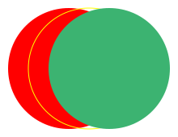
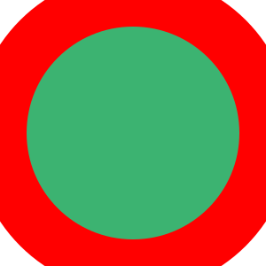

Crea un svg que aparezca un circulo de tamaño 300 dentro de otro tamaño 200. Con un width 300x300 y un viewport de 250x250

Crea un svg que aparezcan cinco circulos de colores degradados de rojo (fill:#550000, fill:880000, fill:AA0000, fill:CC0000,fill:FF0000) cuyo rx se vaya desplazando 25 y su radio vaya creciendo de 5 en 5.
Ejercicio 4. Modifica el anterior para que el degradado sea en verdes y se incremente sobre el eje cy y se se vaya desplazando de 25 en 25m de manera que el más oscuro salga encima de la pila y su radio vaya creciendo de 5 en 5
Modifica el anterior para que el degradado sea en amarillos,cyan y purpura y se incremente sobre el eje cy y el cx de manera que salga esta figura.
Modifica los viewbox para que se vea solo esto . (puedes usar otra figura)